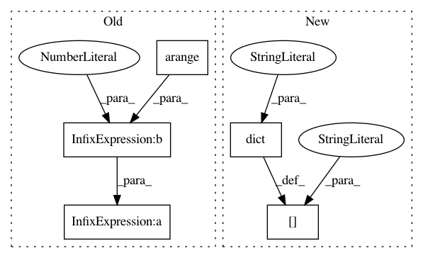

d0dc33d074f371a6f10d7b2354173a7edca7e23b,dataset/models/tf/unet.py,UNet,default_config,#Any#,31
Before Change
filters = 64 // number of filters in the first block
config["input_block"].update(dict(layout="cna cna", filters=filters, kernel_size=3, strides=1))
config["body/num_blocks"] = 4
config["body/filters"] = 2 ** np.arange(config["body"]["num_blocks"]) * filters * 2
config["body/upsample"] = dict(layout="tna", factor=2)
config["head"].update(dict(layout="cna cna", filters=filters, kernel_size=3, strides=1))
config["loss"] = "ce"
After Change
config["common"] = dict(conv=dict(use_bias=False))
config["body/num_blocks"] = 5
config["body/filters"] = (2 ** np.arange(config["body/num_blocks"]) * 64).tolist()
config["body/downsample"] = dict(layout="p", pool_size=2, pool_strides=2)
config["body/encoder"] = dict(layout="cnacna", kernel_size=3)
config["body/upsample"] = dict(layout="tna", kernel_size=2, strides=2)
config["body/decoder"] = dict(layout="cnacna", kernel_size=3)
config["head"] = dict(layout="c", kernel_size=1, strides=1)
In pattern: SUPERPATTERN
Frequency: 3
Non-data size: 5
Instances
Project Name: analysiscenter/batchflow
Commit Name: d0dc33d074f371a6f10d7b2354173a7edca7e23b
Time: 2018-08-06
Author: rhudor@gmail.com
File Name: dataset/models/tf/unet.py
Class Name: UNet
Method Name: default_config
Project Name: analysiscenter/batchflow
Commit Name: cc07095b2f72ff3ba5e5d76900ff17111cf9f177
Time: 2019-07-29
Author: 7520522+a-arefina@users.noreply.github.com
File Name: batchflow/models/tf/unet.py
Class Name: UNet
Method Name: default_config
Project Name: analysiscenter/batchflow
Commit Name: 81687eaca82a72f201bc81548725ea7e6e38e6a1
Time: 2019-08-05
Author: dimonovez@gmail.com
File Name: batchflow/models/tf/vnet.py
Class Name: VNet
Method Name: default_config